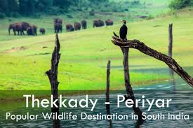

The slogan used by the Kerala Tourism Department says it all about this alfresco state. With the Arabian Sea in the west and a channel of backwaters running throughout the state, Kerala indeed offers the most scenic backdrop for all your clicks!. Read More
Kerala is known for its pioneer in medication using Ayurveda as its treatment method, a home to Somatheeram, the world's first Ayurvedic Resort. Ayurveda is also used for beauty, massage and hair treatment. Read More
The backwaters of Kerala consist of a network of turquoise and serene streams and canals, all beautifully interwoven. These backwaters are mostly composed of lagoons and lakes that lie parallel to the Arabian Sea. Read More
Muzhappilangad beach of Kerala runs parallel to NH 66 and is the longest drive-in beach in Asia. Besides being the best drive-in beach in Asia, it ranks amongst the world’s top 6 beaches for driving by BBC. Read More